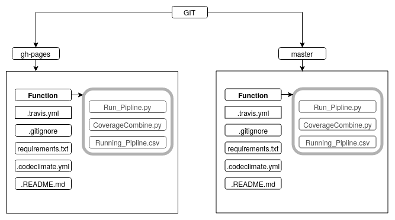

CI/CD: Testing made easy
Introduction
The continuous methodologies of software development are based on automating the execution of scripts to minimize the chance of introducing errors while developing applications. They require less human intervention or even no intervention at all, from the development of new code until its deployment.
Many software companies are using this for development and integration of there platform. And one of the most famous open source tool used is Travis CI. It's used in many opensource packages and projects as well.
This is a small tool building the CI/CD framework for a small scale project. It's is build such that no knowledge of any tool or CI/CD concept is required. It can be used across project in your GIT Repository.
You can download the code for each of the branch for respective git branches from the link provided. And place it as per the folder Structure.
Copy the token from GIT by following the below process.
Many software companies are using this for development and integration of there platform. And one of the most famous open source tool used is Travis CI. It's used in many opensource packages and projects as well.
This is a small tool building the CI/CD framework for a small scale project. It's is build such that no knowledge of any tool or CI/CD concept is required. It can be used across project in your GIT Repository.
Goal of the tool
Mainly the tool automatically checks for code quality and static code check. A coverage report is generated if test cases are written in python unit-test. All the report and check is been deployed back in the gh-branch of the GIT.
Specific Requirement Performed By The Tool
- When Code is pushed to Github it should execute and produce the following reports
- Coverage Report
- Code Quality
- Code Spell
- Duplication
- Detect Dead Code
- All the reports should be generated in the branch in GIT. So that the master commit can be cleaner and don’t have multiple unnecessary commits.
- All the changes should automatically reflect without changing any configuration.
- In the Master branch in GIT, it should only build and check if it’s working. The maintainer of the GIT repository will have to check the essential and final commits in the branch and merge it with the master as per the requirement.
Tools Used To Build The Requirement
| 1. | |
 |
| 2. |  |
|
| 3. |
How To Setup The System
First have to follow the following folder structure in there respective branches as shown below. You can download the code for each of the branch for respective git branches from the link provided. And place it as per the folder Structure.
Setting Up The Token
Copy the token from GIT by following the below process.